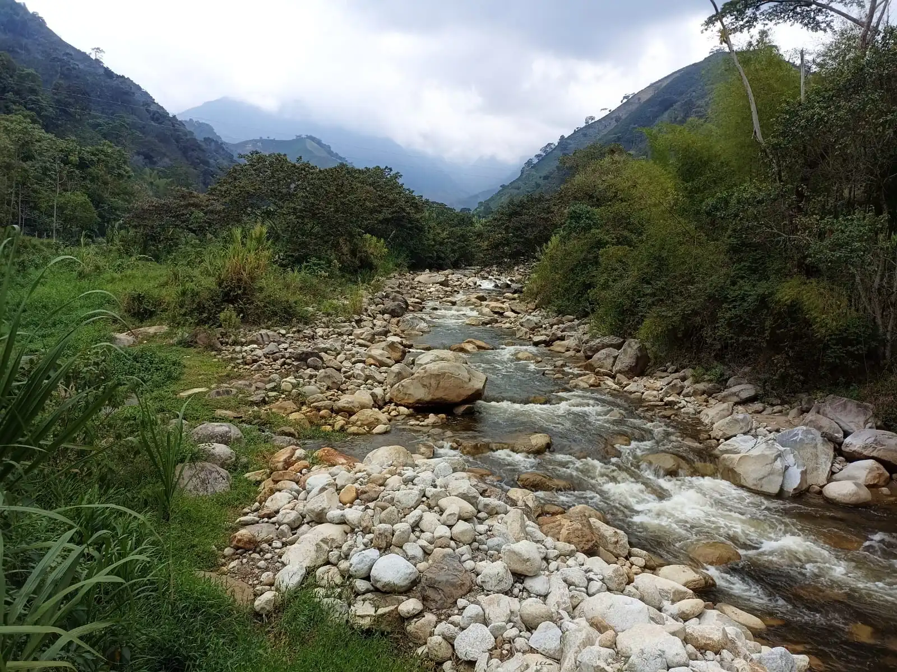

Támesis
«Viajar es añadir vida a la vida»
Una crónica marcada por la niebla, la plaza principal y el ascenso a la montaña. Támesis abre la edición como un viaje donde el paisaje y la memoria ancestral se cruzan a cada paso.
Leer crónica
«Viajar es añadir vida a la vida»
Una crónica marcada por la niebla, la plaza principal y el ascenso a la montaña. Támesis abre la edición como un viaje donde el paisaje y la memoria ancestral se cruzan a cada paso.
Leer crónicaArchivo reciente

«Dichoso el que logra ver su ciudad con ojos de visitante»
Exploramos la capital lechera de Antioquia, un pueblo de senderos impecables y horizontes verdes.
Leer crónica
«Viajar es cambiarle la ropa al alma»
Un recorrido donde el río marca el ritmo y el verde encierra la escena.
Leer crónica
«Solo los que vagan encuentran nuevos caminos»
Una salida de calor, carretera y pausas lentas donde el viaje se abre hacia el paisaje del occidente antioqueño.
Leer crónica
«La vida, o es una aventura o no es nada»
Un pueblo de piedra, arquitectura y memoria.
Leer crónica
«Muere lentamente quien no viaje, ni lee, quien no sueña»
Un trayecto con aroma de café.
Leer crónica
«No hay viaje que no te cambie algo»
Agua, sendero y caída vertical en una de las rutas.
Leer crónica